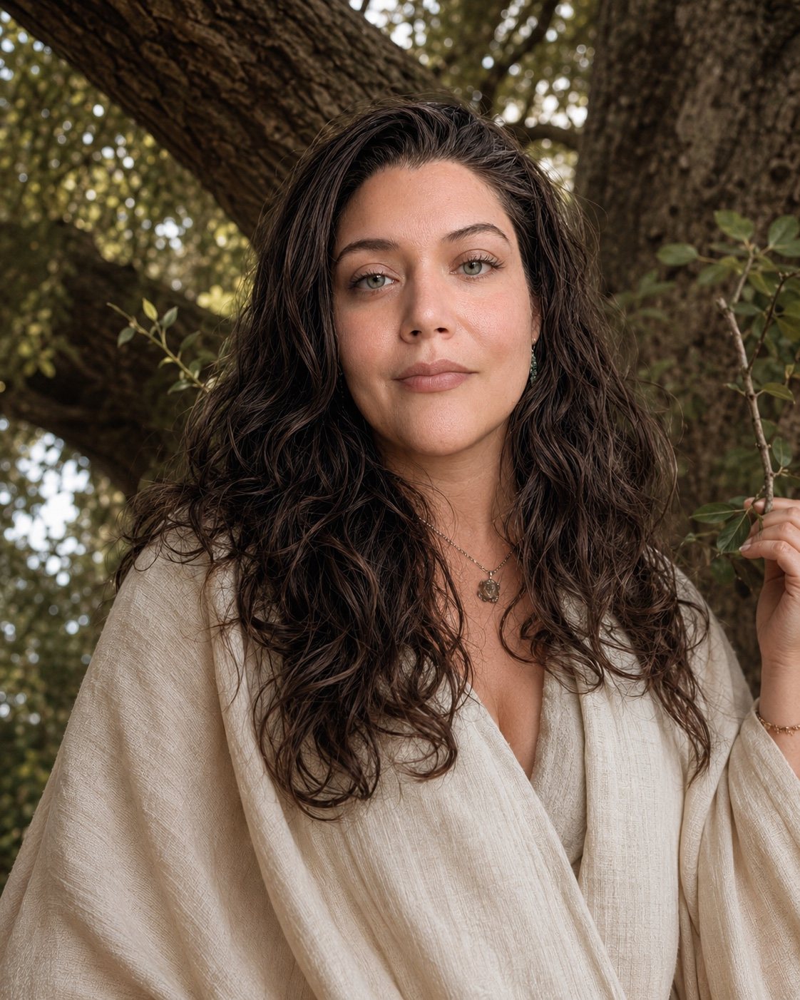
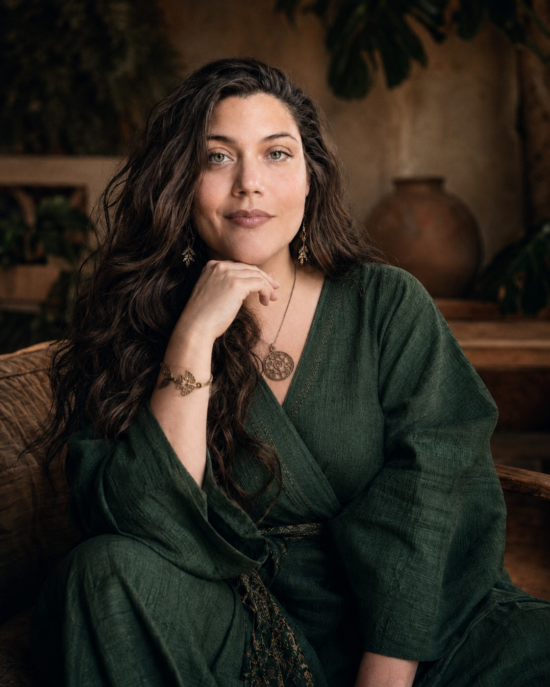

Medicine woman, ceremonialist, somatic medium — serving worldwide.

The calling arrived before the language for it. Long before training, before lineage, before the medicine basket — there was a felt sense of the world being more porous than the world insists. The dead were not gone. The land was not silent. The body knew things the mind had not been taught to translate.
The first formal door was the hands. Licensed bodywork in 2010, the somatic foundation under everything that followed. To work with the body honestly is to apprentice to a way of knowing that does not lie. From there the path opened — initiations into traditions that had been waiting, study with elders who recognized what I had been carrying since childhood, ceremony as the structure beneath the work.
Sixteen years on, the work has gathered itself into a practice. Solo sessions. Community ceremonies. Long arcs of accompaniment. The same intention threads through all of it: to meet what is real, to hold what others cannot hold, and to walk alongside those whose own calling is asking something of them they cannot yet name.
Adi Marie is a shamanic healer, ceremonialist, and somatic medium with sixteen years of practice rooted in Southern California. What began as deep hands-on bodywork and therapeutic touch evolved — through initiation, study, and the relentless demands of a genuine calling — into something far more encompassing.
Her training spans multiple lineages and traditions. She is an initiated diviner in the Dagara tradition of West Africa, a lineage that carries ancient technologies of ancestral connection, elemental medicine, and communal healing. She is also trained in somatic therapeutic arts, entheogenic medicine facilitation, expressive arts, generative hypnosis, ceremonial design, and the botanical healing arts.

Her medicine basket is vast and carefully tended. But what defines her practice is not the accumulation of techniques — it is the quality of presence she brings to every session, every ceremony, every threshold crossing. She has the rare ability to hold space at the edge of the known world, where the personal becomes mythic and the mythic becomes liveable.
Adi Marie works with doctors, medicine people, therapists, artists, leaders of industry, and those whose decisions shape the trajectory of this earth ship. Her clients come from all walks of life and all spiritual backgrounds. What unites them is a shared commitment to going deeper — to the kind of healing that changes the shape of a life, not just the surface of it.
‘The earth is asking for healers. The times are asking for those willing to go into the underworld and come back with something real. This work is my answer to that call — and it is an honor to walk that path alongside those who are ready.’ — Adi Marie
Based in the canyon lands of Southern California, Adi offers private sessions and intensives in person, and is available worldwide for virtual sessions, private travel engagements, and select community events.
The Animist Apothecary is rooted in a single conviction — that all beings carry spirit, and that the work of healing is the work of restoring relationship between a person and the living world they belong to. The personal is planetary. Each person who heals becomes medicine for the world.
Adi Marie is known for her ferocious love, her uncommon insight, and her capacity to hold the full spectrum of the human experience without flinching. She works at the edges where bodywork meets ceremony, where therapeutic skill meets the unseen, and where the ones who carry weight find a place to set it down.
What unites every container — solo session, group ceremony, year-long arc — is the same intention. Slow, careful work. Sovereign decisions. Sacred reciprocity. No performance, no spiritual bypass. Only the kind of presence that lets a real thing happen.
An interview from the practice — on the work, on lineage, and on what these times are asking of us.
Adi Marie's practice has been tended without interruption since 2010 — sixteen years of devoted service, more than a decade of formal initiation and study, and an ongoing apprenticeship to the wild lands of Southern California. The foundation was laid as a licensed massage therapist and somatic bodyworker, and every layer since has been added one initiation at a time.
She is an initiated diviner in the Dagara tradition of West Africa, a lineage that carries ancient technologies of ancestral connection, elemental medicine, and communal healing. Her relationship with the lineage and its elders is ongoing — divinations are read, ceremonies are kept, and the medicine is returned to the living web that gave it.
Her formation continues across multiple disciplines — entheogenic medicine facilitation, generative hypnosis, expressive arts as ceremonial tool, ritual architecture, and the botanical healing arts. She trains with elders and lineage holders, and apprentices to the medicines themselves.
She trains and is trained by the practitioners who walk this terrain — doctors, medicine people, therapists, artists, and the leaders whose decisions shape the trajectory of this earth ship. The medicine basket is vast and carefully tended.
Beyond the one-to-one work, four currents run alongside — places where the practice meets writing, teaching, public speaking, and the slow gathering of a journal.
Reflective essays, poetic transmissions, and candid meditations on the nature of healing, initiation, and the living world. Gathered now — published in installments to come.
Receive the Dispatches → For PractitionersWorkshops and intensive teaching programs for those developing their own ceremonial and healing practice. Animist cosmology, sacred breath facilitation, ceremonial design, ancestral healing, somatic awareness, expressive arts as ritual. Private engagements available for groups of six or more.
Inquire About Teaching → For Event OrganizersSpeaking engagements, panel participation, podcast appearances, and ceremonial leadership at events. Animist worldviews, indigenous wisdom in contemporary healing, somatic intelligence, ecological grief, ceremonial culture as collective medicine.
Inquire by Email → A Living DocumentRecurring threads — the grief of the living world and why we must feel it; what the body knows that the mind hasn’t caught up to yet; the difference between spirituality and spiritual bypassing; canyon medicine, and what the wild lands teach those who listen.
Read on →Send a note. We’ll find an hour, hear what you’re carrying, and see whether the work is the right shape for where you are.
Apply to Begin